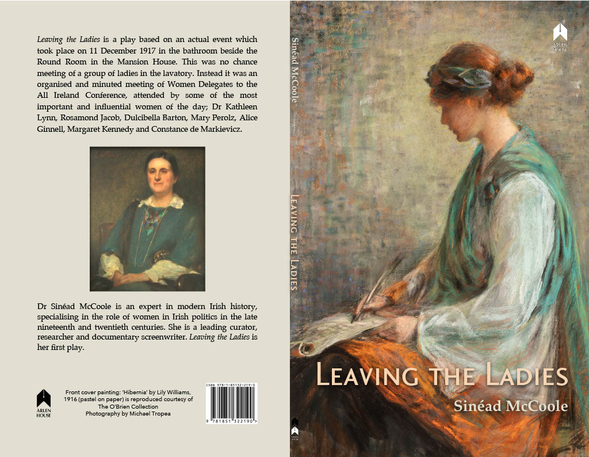

Leaving the Ladies
published by Arlen House, 2019.
Leaving the Ladies is a play based on an actual event which took place on 11 December 1917. A meeting of Irish women activists that took place in the bathroom beside the Round Room in the Mansion House. Countess de Markievicz, Dr Kathleen Lynn and Mary Perolz were among those gathered. This was no chance meeting of a group of ladies in the lavatory. Instead it was an organised and minuted meeting of Women Delegates to the All Ireland Conference, attended by some of the most important and influential women of the day working to make sure they were included in political life. What happened there is imagined, but the play is based on documents and letters.